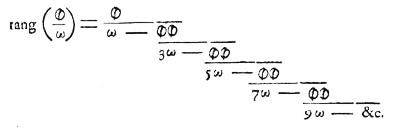

Доказательство иррациональности π
В 1760-х Иоганн Генрих Ламберт доказал, что число π иррационально, то есть не может быть представлено дробью a/b, где a — целое число, а b — ненулевое целое число. В XIX веке Чарльз Эрмит нашел еще одно доказательство, пользуясь только базовыми средствами математического анализа. В дальнейшем Мэри Картрайт, Айвен Нивен и Никола Бурбаки смогли упростить доказательство Эрмита, а Миклош Лачкович упростил доказательство Ламберта.
В 1882 году Фердинанд фон Линдеманн доказал, что π не только иррационально, но и трансцендентно
Скан формулы со стр. 288 из труда Ламберта «Mémoires sur quelques propriétés remarquables des quantités transcendantes, circulaires et logarithmiques», Mémoires de l’Académie royale des sciences de Berlin (1768), 265—322.
В 1761 году Ламберт доказал иррациональность π, исходя из найденного им представление тангенса в виде непрерывной дроби
Ламберт доказал, что если x не равно нулю и рационально, то это выражение иррационально. Так как tg(π/4) = 1, отсюда следует, что π/4 иррационально и, следовательно, π иррационально тоже.